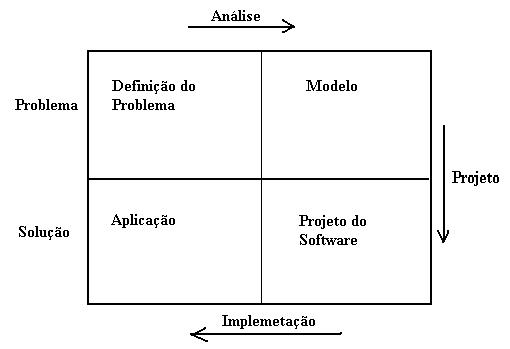

PostgreSQL - Projeto/Arquitetura
1) Conceitos
2) Modelo Entidade Relacionamento
3) Modelo Objeto Relacional
4) Normalização
5) Integridade Referencial
6) Planejamento e Otimização
Iniciar com os conceitos básicos: dado, informação e conhecimento.
Dado – representação simbólica, quantificada ou quantificável. Um texto, um número e uma foto são exemplos de dados. O computador somente trabalha com dados, nada de informações e muito menos de conhecimento.
Informação – são mensagens sob forma de dados, que são recebidas e compreendidas. Caso não seja compreendida elas são apenas dados.
Portanto dados são entes meramente sintáticos (estruturas).
As informações contém semântica, ou seja, contém um significado próprio. A informação é algo objetivo e subjetivo.
Conhecimento – enquanto a informação é um conhecimento teórico, o conhecimento é algo prático.
Só podemos transmitir dados, jamais informações e conhecimento. Os dados podem ser transmitidos, ao serem interpretados tornam-se informações, mas somente ao serem experimentados transformam-se em conhecimento.
Fonte: Livro Bancos de Dados de Valdemar W. Setzer e Flávio Soares Corrêa da Silva.
1) Conceitos
Modelo Relacional - A maioria dos SGBDs existentes são baseados no modelo relacional.
SGBD - É um sistema de computador cuja função principal é a de manter bancos de dados e fornecer informações os mesmos quando solicitados.
DBA - DataBase Administrator (Administrador de Bancos de Dados), é quem trabalha criando os bancos de dados, implementando controle técnico e administrativo dos dados e implementando a segurança.
Entidades - Ou classes, podem ser concretas ou abstratas e representam pessoas, lugares ou coisas (objetos). Entidade no projeto representa Tabela na implementação.
Atributos - Ou propriedades. As entidades são compostas por atributos. Atributos no projeto correspondem a campos na implementação.
Relacionamentos - Associação entre as entidades.
Projeto - Modelo, lógico e físico.
Implementação - Criação e administração, físico.
Modelo de dados - É uma definição lógica e abstrata de um banco de dados.
Implementação - É a aplicação física (prática) do modelo de dados em um computador.
Aplicação cliente - Também chamada de front-end do banco de dados. Roda sobre um SGBD.
DDL - Conjunto de instruções para definir ou declarar objetos do banco de dados.
DML - Conjunto de instruções para manipular ou processar os objetos do banco de dados.
Dicionário de dados - É um conjunto de tabelas do banco de dados que contém informações sobre os objetos do banco, dados sobre dados (metadados).
Bancos distribuídos - Banco que é logicamente centralizado e fisicamente distribuído. A distribuição pode ser em vários sites. Os sites podem estar em vários SO diferentes, redes e máquinas diferentes.
Projeto lógico - É a fase de identificação das entidades de interesse para a empresa e de identificação das informações a serem armazenadas nas entidades. Deve acontecer antes do projeto físico (implementação).
CAST - Valores podem ser convertidos de um tipo para outro através do operador CAST ou através de coerção implícita. O PostgreSQL em sua versão 8.3 está passando a usar bem mais as coerções explícitas.
Projeto de banco - Projetar bancos tem mais de arte que de ciência. Um projeto adequado previne perca da integridade dos dados e permite consultas adequadas e eficientes. Qualquer projeto requer uma noção exata do que o banco deverá armazenar. Temos que colher o máximo de informações junto ao cliente e ir além percebendo necessidades que ele próprio não percebe.
Casos de uso - São textos com formatação livre, que descrevem operações do ponto de vista de um eventual usuário interagindo com o sistema. Uma boa forma de capturar as finalidades do banco é construindo casos de uso.
Modelagem dos dados - Exige que reflitamos cuidadosamente sobre os diferentes conjuntos ou classes (entidades) necessárias para solucionar o problema.
Dados - Representação simbólica (abstrata).
Informação - Dados com significado. Mensagem compreendida é informação, caso contrário são apenas dados. Computadores armazenam apenas dados e não informação.
MER - É um modelo que não pode ser representado num computador, existindo apenas na mente de uma pessoa. Pode ser representado como texto ou em forma de diagrama gráfico (DER).
IDs - Caso um registro tenha todos os valores dos campos semelhantes aos valores de outro registro, com exceção do ID, então isso mostra que o ID não é adequado para chave primária da tabela.
Chave Primária - Formada por um campo ou mais que identifica todos os registros de uma tabela de forma única.
Chave Candidata - É a chave onde nenhum subconjunto de campos é também uma chave.
Superchave - É a chave formada por um conjunto de campos além do necessário para identificar todos os registros de forma única, ou seja, contém a chave primária mais um ou mais campos.
Chave alternativa - Quando uma tabela contém uma chave primária, qualquer outra chave será uma chave alternativa.
Projeto do Banco de Dados – Quando um atributo de uma entidade armazena valores duplicados, isso indica que devemos criar uma nova entidade para asmazenar os valores deste atributo e então relacionas as entidades através desse atributo.
Obs.: CPF no Brasil não é uma boa escolha para chave primária em algumas entidades, pois membros de uma família podem utilizar o mesmo CPF.
Diagrama de Zelzowitz

Este é um diagrama usado para o desenvolvimento de software mas também podemos aplicá-lo ao projeto de bancos de dados.
Análise – partindo do mundo real, define o problema e gera o modelo
Projeto – partindo do modelo gera o projeto do software (banco)
Implementação – partindo do projeto do software (banco) cria a aplicação.
Partimos da situação real, que deve ser analisada gerando um modelo que será transformado em projeto e então se implementará no computador.
Classes – objetos – atributos (propriedades e métodos)
Tabelas – registros – campos
Uma boa estratégia é portar um conjunto de perguntas a serem respondidas:
1) Qual o principal objetivo do sistema?
2) Que dados são necessários para satisfazer este objetivo
3) Que informações já existem: algum sistema de computador anterior, fichas, formulários, etc.
4) Que entidades foram identificadas?
5) Quais as informações de cada entidade?
6) Qual o rascunho do modelo?
7) Que saídas são esperadas?
Ao final elaborar um primeiro diagrama de classes e vários casos de uso, que relatem no formato texto as interações do sistema.
Anotar o que pode dar errado em cada faze do sistema.
História
As três primeiras formas normais foram definidas por Ted Codd.
O Modelo de Entidades e Relacionamentos foi introduzido por Peter Chen.
O MR (Modelo Relacional) foi definido em 1970 por E. F. Codd.
Modelo Relacional Normalizado
Cada tabela tem um nome distinto
Cada coluna tem um nome distinto
Não existem dois registros iguais
A ordem dos registros e dos campos é irrelevante
SQL – É uma linguagem de declaração e não de programação e atualmente é a linguagem padrão dos SGBDRs e SGBDRO.
Referências:
Bancos de Dados – Aprenda o que são, Melhore seu conhecimento, Construa os seus
De Valdemar W. Seltzer e Flávio Soarea Corrêa da Silva
Beginning Database Design
De Clare Churcher
A Introduction to Database Systems
De C. J. Date
2) O Modelo Relacional
Todos os dados são representados como tabelas
Os resultados de qualquer consulta é apenas mais uma tabela!
Tabelas são formadas por linhas e colunas
Linhas e colunas são (oficialmente) desordenadas (isto é, a ordem com que as linhas e colunas são referenciadas não importa).
Linhnas são ordenadas apenas sob solicitação. Caso contrário, a sua ordem é
arbitrária e pode mudar para um banco de dados dinâmico
A ordem das colunas é determinada por cada consulta
Cada tabela possui uma chave primária, um identificador único constituído por uma ou mais colunas
A maioria das chaves primárias é uma coluna apenas (por exemplo, TOWN_ID)
Uma tabela é ligada (conectada) à outra incluindo-se a chave primária da outra tabela. Esta coluna incluída é chamada uma chave externa
Chaves primárias e chaves externas são os conceitos mais importantes no projeto
de banco de dados. Gaste o tempo necessário para entender o que são!
Qualidades de um Bom Projeto de Banco de Dados
Reflete a estrutura real do problema
Pode representar todo os dados esperados ao longo do tempo
Evita armazenamento redundade de items de dados
Fornece acesso eficiente aos dados
Suporta a manutenção da integridade dos dados ao longo do tempo Limpa, consistente e fácil de entender
Nota: Estes objetivos são algumas vêzes contraditórios!
Introdução à Modelagem de Entidades - Relacionamento
Modelagem E-R: Um método para projetar banco de dados
Uma versão simplificada é apresentada aqui
Representa o dado por entidades que possuem atributos.
Uma entidade é uma classe de objetos ou conceitos identificáveis distintos
Entidades possuem relações umas com as outras
O resultado o processo é um banco de dados normalizado que facilita o acesso e evita dados duplicados
Nota: Muito do projeto formal de banco de dados é focado em normalizar o banco de
dados e assegurar que o projeto adere ao nível de normalização (isto é, primeira forma
normal, segunda forma normal, etc.). Este nível de formalidade está além desta discussão,
mas deve-se saber que tais formalizações exitem.
Processo de Modelagem E-R
Identifique as entidades que o seu banco de dados deve representar
Determine as relações de cardinalidade entre as entidades e classifique-as como
Um-para-Um (por exemplo, um imóvel tem um endereço)
Um-para-muitos (por exemplo, um imóvel pode ser envolvido em muitos incêndios)
Muitos-para-muitosy (por exemplo, venda de imóveis: um imóvel pode ser vendido para muitos proprietários, e um proprietário individual pode vender muitos imóveis)
Desenhe o diagrama entidade-relação
Determine os atributos de cada entidade
Defina a chave primária (única) de cada entidade
Do modelo E-R para o Projeto de Banco de Dados
Entidades com relações um-para-um deve ser fundidas em uma única entidade
Cada entidade restante é modelada por uma tabela com uma chave primária e atributos, alguns dos quais podem ser chaves externas
Relações Um-para-muitos são modeladas por um atributo de chave externa na tabela
represntando a entidade do lado "muitos" da relação
Relações Muitos-para-muitos entre duas entidades são modeladaspor uma terceira tabela que possui chaves externas que referem-se às entidades. Estas chaves externas devem ser incluidas na chave primária da tabela da relação, se apropriado
Ferramentas disponíveis comercialmente podem autimatizar o processo de conversão de um modelo E-R para um esquema de banco de dados
Fonte: http://www.universia.com.br/mit/11/11208/pdf/lecture5-2.pdf (de Thomas H. Grayson)
3) Modelo Objeto Relacional
A maioria dos sistemas de gerência de bancos de dados (SGBD) utlizados hoje em dia são baseados no modelo relacional, definido por E.F. Codd. Devido a grande demanda de dados complexos que devem ser armazenados (textos, imagens, som, etc), está havendo uma grande migração para sistemas que suportam esses tipos de dados. Entre as opções de sistemas, estão os bancos de dados orientados a objetos e os objeto-relacionais. Os bancos de dados objeto-relacionais estão situados entre os relacionais e os orientados a objetos. Com este resumo, queremos mostrar algumas características do modelo objecto-relacional.
Principais características do SGBD Objeto-Relacional
Devido a falta de padronização do modelo objeto-relacional, cada fabricante definiu as características do seu SGBD. Analizaremos algumas das principais características dos SGBDs objeto-relacional e daremos uma ênfase no SGBD Oracle 8.x, devido a sua grande popularidade como ORDBMS.
Uma das principais características é permitir que o usuário defina tipos adicionais de dados – especificando a estrutura e a forma de operá-lo – e use estes tipos no modelo relacional. Desta forma, os dados são armazenados em sua forma natural [SAPM 98].
Além dos tipos base já existentes, é permitido ao usuário criar novos tipos e trabalhar com dados complexos como imagens, som e vídeo, por exemplo.
Em última análise, o tipo objeto-relacional está evoluindo mais do que o orientado a objeto, tornando-se cada vez mais um novo produto, que não pode ser comparado com o orientado a objeto, pois este já é um produto maduro [MS 97].
Fonte: http://paginas.terra.com.br/informatica/arruda/Downloads/Artigos/artigo04/index.htm
4) Normalização
Normalização de Tabelas
Normalizar bancos tem o objetivo de tornar o banco mais eficiente, reduzindo as redundâncias, evitando retrabalho em eventuais alterações do modelo.
Uma regra muito importante advinda da normalização ao criar tabelas é atentar para que cada tabela contenha informações sobre um único assunto, de um único tipo.
Geralmente a aplicação das três primeiras formas normais atende à maioria dos projetos e dificilmente precisamos recorrer à quarta e/ou quinta (somente quando estritamente necessário).
Normalização total não é obrigatório mas fortemente recomendado.
1a Forma Normal
Uma entidade encontra-se nesta forma quando nenhum dos atributos se repete.
Exemplo: evitar cadastrar um produto duas vezes. Quando houver repetição devemos criar uma outra entidade com os campos repetidos e relacionar as tabelas por esse campo.
Exemplo:
clientes
cod nome uf
1 – joão – CE
2 – pedro – CE
3 – manoel – MA
Solução: Criar uma tabela para o campo UF e relacionar ambas.
estados
1 – CE
2 - MA
clientes
1 – joão – 1
2 – pedro – 1
3 – manoel - 2
Outro Exemplo:
Alunos: matricula, nome, data_nasc, serie, pai, mae
Se a escola tem vários filhos de um mesmo casal haverá repetição do nome dos pais. Estão para atender à primeira regra, criamos outra tabela com os nomes dos pais e a matrícula do aluno.
2ª Forma Normal
Quando a chave primária é composta por mais de um campo.
Todos os campos que não fazem parte da chave devem depender da chave (de todos os seus campos).
Caso algum campo dependa somente de parte da chave, então devemos colocar este campo em outra tabela.
Exemplo:
TabelaAlunos
Chave (matricula, codigo_curso)
avaliacao descricao_curso
Neste caso o campo descricao_curso depende apenas do codigo_curso, ou seja, tendo o código do curso conseguimos sua descrição. Então esta tabela não está na 2ª Forma Normal.
Solução:
Dividir a tabela em duas (alunos e cursos) e incorporar à chave existente:
TabelaAlunos
Chave (matricula, codigo_curso)
avaliacao
TabelaCursos
codigo_curso
descricao_curso
3ª Forma Normal
Quando um campo não é dependente diretamente da chave primária ou de parte dela, mas de outro campo da tabela que não pertence à chave primária. Quando isso ocorre esta tabela não está na terceira forma normal e a solução é dividir a tabela.
Um atributo comun não deve depender de outro atributo comun, mas somente da PK.
Exemplo:
Campo tipo total, que depende de deus fatores: quantidade e preco.
Solução:
Não devemos armazenar campos calculados na tabela, pois além de gerar inconsistência são desnecessários, já que podemos consegui-lo com uma operação.
4a.Forma Normal
Uma tabela está na 4FN, se e somente se, estiver na 3FN e não existirem dependências multivaloradas.
Exemplo: Dados sobre livros
Relação não normalizada: Livros(nrol, (autor), título, (assunto), editora, cid_edit, ano_public)
1FN: Livros(nrol, autor, assunto, título, editora, cid_edit, ano_public)
2FN: Livros(nrol,título, editora, cid-edit, ano_public)
AutAssLiv(nrol, autor, assunto)
3FN: Livros(nrol, título, editora, ano_public)
Editoras(editora, cid-edit)
AutAssLiv(nrol, autor, assunto)
* Redundância para representar todas as informações
* Evitar todas as combinações: representação não-uniforme (repete alguns elementos ou posições nulas)
Passagem à 4FN:
* Geração de novas tabelas, eliminando Dependências Multivaloradas
* Análise de Dependências Multivaloradas entre atributos:
* autor, assunto - Dependência multivalorada de nrol
5a. Forma Normal
Está ligada à noção de dependência de junção Se uma relação é decomposta em várias relações e a reconstrução não é possível pela junção das outras relações, dizemos que existe uma dependência de junção.
Existem tabelas na 4FN que não podem ser divididas em duas relações sem que se altere os dados originais.
Exemplo: Seja as relações R1(CodEmp, CodPrj) e R2(CodEmp, Papel) a decomposição da relação ProjetoRecuro(CodEmp, CodPrj, Papel).
Dica:
Em caso de dúvida, o modelo ideal é o menos engessado, mesmo que paguem o preço de alguma redundância.
- Ao aplicar a 3a. FN ainda persistirem redundâncias, então divide-se a tabela em duas.
Exemplos de Relacionamentos tipo N para N
Autores – Músicas
Alunos – Disciplinas
Produtos – Fornecedores
Produtos – Pedidos
Fases na criação de um banco de dados (aplicativo):
Análise
Projeto
Implementação
Testes
Homologação
Administração
Análise
Nesta fase "enfrentamos" o mundo real para analisar e diagnosticar o problema para então passar um esboço do modelo para a fase de projeto.
Nessa fase procedemos ao levantamento, gerenciamento e validação de informações importantes para o modelo.
Análise é a fase que tem contato com o mundo real, coletando informações junto ao cliente (usuário). Depois da coleta realiza a modelagem das entidades e relacionamentos e das normalizações. Ao final deve gerar um diagrama das entidades e relacionamentos DER.
Projeto - definição das tabelas, índices, chaves (PK e FK), relacionamentos, views, etc.
Fases do Projeto do Banco de Dados:
• Modelagem Conceitual
• Projeto Lógico
Modelo Conceitual - Define apenas quais os dados que aparecerão no banco de dados, sem se importar com a implementação do banco. Para essa fase o que mais se utiliza é o DER (Diagrama Entidade-Relacionamento).
Modelo Lógico - Define quais as tabelas e os campos que formarão as tabelas, como também os campos-chave, mas ainda não se preocupa com detalhes como o tipo de dados dos campos, tamanho, etc.
Não devemos misturar as tarefas de cada uma das fases.
Implementação - criação do banco de acordo com o projeto e também criação dos usuários, grupos e privilégios.
Análise e projeto são fases lógicas e implementação é física.
Comparando Construção de bancos de dados com edifícios:
Análise - reconhecimento do terreno e elaboração de croquis (esboço da planta).
Projeto - Elaboração das plantas de acordo com o esboço: planta baixa, de elevação, detalhes, de situação, etc.
Implementação - Construção do edifício.
Administração - manutenção do edifício.
5) Integridade Referencial
Tradução livre do documentação "CBT Integrity Referential":
http://techdocs.postgresql.org/college/002_referentialintegrity/.
Integridade Referencial (relacionamento) é onde uma informação em uma tabela se refere à informações em outra tabela e o banco de dados reforça a integridade.
Tabela1 ------------> Tabela2
Onde é Utilizado?
Onde pelo menos em uma tabela precisa se referir para informações em outra tabela e ambas precisam ter seus dados sincronizados.
Exemplo: uma tabela com uma lista de clientes e outra tabela com uma lista dos pedidos efetuados por eles.
Com integridade referencial devidamente implantada nestas tabelas, o banco irá garantir que você nunca irá cadastrar um pedido na tabela pedidos de um cliente que não exista na tabela clientes.
O banco pode ser instruído para automaticamente atualizar ou excluir entradas nas tabelas quando necessário.
Primary Key (Chave Primária) - é o campo de uma tabela criado para que as outras tabelas relacionadas se refiram a ela por este campo. Impede mais de um registro com valores iguais. É a combinação interna de UNIQUE e NOT NULL.
Qualquer campo em outra tabela do banco pode se referir ao campo chave primária, desde que tenham o mesmo tipo de dados e tamanho da chave primária.
Exemplo:
clientes (codigo INTEGER, nome_cliente VARCHAR(60))
codigo nome_cliente
1 PostgreSQL inc.
2 RedHat inc.
pedidos (relaciona-se à Clientes pelo campo cod_cliente)
cod_pedido cod_cliente descricao
Caso tentemos cadastrar um pedido com cod_cliente 2 ele será aceito.
Mas caso tentemos cadastrar um pedido com cod_cliente 3 ele será recusado pelo banco.
Criando uma Chave Primária
Deve ser criada quando da criação da tabela, para garantir valores exclusivos no campo.
CREATE TABLE clientes(cod_cliente BIGINT, nome_cliente VARCHAR(60)
PRIMARY KEY (cod_cliente));
Criando uma Chave Estrangeira (Foreign Keys)
É o campo de uma tabela que se relaciona (associa) com o campo Primary Key de outra.
O campo pedidos.cod_cliente refere-se ao campo clientes.codigo, então pedidos.cod_cliente é uma chave estrangeira, que é o campo que liga esta tabela a uma outra.
CREATE TABLE pedidos(
cod_pedido BIGINT,
cod_cliente BIGINT REFERENCES clientes,
descricao VARCHAR(60)
);
Outro exemplo:
FOREIGN KEY (campoa, campob)
REFERENCES tabela1 (campoa, campob)
ON UPDATE CASCADE
ON DELETE CASCADE);
Cuidado com exclusão em cascata. Somente utilize com certeza do que faz.
Dica: Caso desejemos fazer o relacionamento com um campo que não seja a chave primária, devemos passar este campo entre parênteses após o nome da tabela e o mesmo deve obrigatoriamente ser UNIQUE.
...
cod_cliente BIGINT REFERENCES clientes(nomecampo),
...
Parâmetros Opcionais:
ON UPDATE parametro e ON DELETE parametro.
ON UPDATE paramentros:
NO ACTION (RESTRICT) - quando o campo chave primária está para ser atualizado a atualização é abortada caso um registro em uma tabela referenciada tenha um valor mais antigo. Este parâmetro é o default quando esta cláusula não recebe nenhum parâmetro.
Exemplo: ERRO Ao tentar usar "UPDATE clientes SET codigo = 5 WHERE codigo = 2. Ele vai tentar atualizar o código para 5 mas como em pedidos existem registros do cliente 2 haverá o erro.
CASCADE (Em Cascata) - Quando o campo da chave primária é atualizado, registros na tabela referenciada são atualizados.
Exemplo: Funciona: Ao tentar usar "UPDATE clientes SET codigo = 5 WHERE codigo = 2. Ele vai tentar atualizar o código para 5 e vai atualizar esta chave também na tabela pedidos.
SET NULL (atribuir NULL) - Quando um registro na chave primária é atualizado, todos os campos dos registros referenciados a este são setados para NULL.
Exemplo: UPDATE clientes SET codigo = 9 WHERE codigo = 5;
Na clientes o codigo vai para 5 e em pedidos, todos os campos cod_cliente com valor 5 serão setados para NULL.
SET DEFAULT (assumir o Default) - Quando um registro na chave primária é atualizado, todos os campos nos registros relacionados são setados para seu valor DEFAULT.
Exemplo: se o valor default do codigo de clientes é 999, então
UPDATE clientes SET codigo = 10 WHERE codigo = 2. Após esta consulta o campo código com valor 2 em clientes vai para 999 e também todos os campos cod_cliente em pedidos.
ON DELETE parametros:
NO ACTION (RESTRICT) - Quando um campo de chave primária está para ser deletado, a exclusão será abortada caso o valor de um registro na tabela referenciada seja mais velho. Este parâmetro é o default quando esta cláusula não recebe nenhum parâmetro.
Exemplo: ERRO em DELETE FROM clientes WHERE codigo = 2. Não funcionará caso o cod_cliente em pedidos contenha um valor mais antigo que codigo em clientes.
CASCADE - Quando um registro com a chave primária é excluído, todos os registros relacionados com aquela chave são excluídos.
SET NULL - Quando um registro com a chave primária é excluído, os respectivos campos na tabela relacionada são setados para NULL.
SET DEFAULT - Quando um registro com a chave primária é excluído, os campos respectivos da tabela relacionada são setados para seu valor DEFAULT.
Excluindo Tabelas Relacionadas
Para excluir tabelas relacionadas, antes devemos excluir a tabela com chave estrangeira.
Tudo isso está na documentação sobre CREATE TABLE:
http://www.postgresql.org/docs/8.0/interactive/sql-createtable.html
ALTER TABLE
http://www.postgresql.org/docs/8.0/interactive/sql-altertable.html
Chave Primária Composta (dois campos)
CREATE TABLE tabela (
codigo INTEGER,
data DATE,
nome VARCHAR(40),
PRIMARY KEY (codigo, data)
);
Alguns Modelos de Sistemas
Sistema de Contas a Pagar e Receber
(Entidades e Relacionamentos)
Endereço
Tipo de Logradouro
Logradouro
Bairro
Município
UF
Telefone
Pessoa
Física
Jurídica
CPagar
Pagamento
CReceber
Recebimento
Sistema Acadêmico
Cadastro do curso
Cadastro de disciplina
Cadastro de aluno
Cadastro de professor
Abrir turma
Matrícular aluno
Emitir diário
Lançar avaliação
Emitir histórico
Consultar avaliação
Alocar professor
Sistema de Biblioteca
Atores Entidades Atores
bibliotecário Cadastrar assunto
Cadastrar autor
Cadastrar departamento - RH
Cadastrar funcionário - RH
Cadastrar obra
Cadastrar editora - Setor de compras
Cadastrar exemplar
Cadastrar fornecedor - Setor de compras
funcionário Cadastrar usuário
Cadastrar requisição - Setor de compras
Cadastrar motivo de manutenção - Setor de manutenção
Efetuar empréstimo
Efetuar devolução
Registrar manutenção - Setor de manutenção
Registrar reserva
Consultar obras - usuário
Consultar movimentação de usuários
Sistema Bancário
Atores Entidades
cliente Abrir conta
Movimentar Conta
Solicitar talão de cheques
Solicitar empréstimo
Solicitar cartão de crédito
Comprar com cartão de crédito
Pagar fatura do cartão
Contratar seguro
gerante Cadastrar bandeira do cartão de crédito
Cadastrar débito automático
Cadastrar tipos de seguro
Cadastrar cliente
Liberar empréstimo
adm do banco Cadastrar estabelecimento comercial
Cadastrar convênio
Cadastrar gerente
Cadastrar agência
Sistema Comercial
Fornecedor Lote Produto
Nota Fiscal Itens
Movimento estoque
Movimento estoque
Nota Fiscal
Nota Fiscal Itens
Cliente
Fonte destes modelos: Revista SQL Magazine 53
Um bom artigo sobre projeto de software:
Programação (I) - Planejamento e Otimização, de Edvaldo Silva de Almeida Júnior no Viva o Linux:
http://www.vivaolinux.com.br/artigos/verArtigo.php?codigo=8057
Tabelas são mais conceituais e menos físicas que arquivos.
Simplificando:
- DDL e DCL é para o DBA
- DML é para o programador
SGBDs
SGBDR – SGBD Relacional - tabelas são formadas por linhas e colunas (bidimensional)
SGBDOR - Combina os modelos OO e Relacional
SGBDOO - Modelo OO puro
Características de SGBDs:
- Controle de redundância
- Compartilhamento de dados
- Controle de acesso
- Esquematização (relacionamentos armazenados no banco)
- Backups
Objetivo do SGBD - armazenar objetos de forma a tornar ágil e segura a manipulação das informações.
MER - Modelo Entidades e Relacionamentos - é o modelo composto de entidades e relacionamentos
DER - Diagrama Entidades e Relacionamentos - é o resultado da fase inicial do projeto (análise)
Exemplos de Entidades:
- Físicas ou jurídicas - pessoas, funcionários, clientes, vendedores, fornecedores, empresas, filiais
- Documentos - ordens de compra, ordens de serviço, pedidos, notas fiscais
- Tabelas - CEPs, UF, cargos, etc
Tupla (termo para a fase de projeto)
Registro (termo para a fase de implementação)
Fase de Análise
Ao definir uma entidade pergunte:
- Há informação relevante sobre esta entidade para a empresa?
Faça um diagrama da entidade com alguns atributos
Relacionamentos
A B
1 ----------- N
Perguntar se A tem 1 ou + B
Perguntar se B tem somente 1 A
Relacionamentos N - N devem ser divididos em dois 1 para N:
1 ---------- N e N ----------- 1
Referência: Livro Instant SQL Programming - Joe Celko